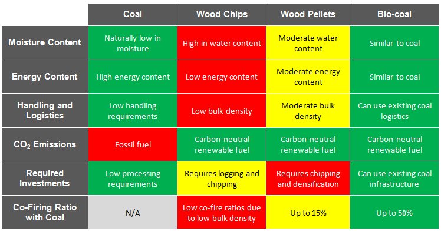
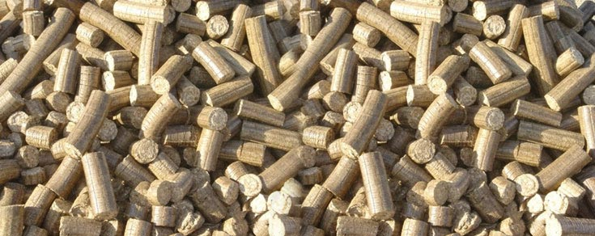

WHAT IS BIOCOAL?
Biocoal, also commonly referred to as syn coal (synthetic coal), is created through the torrefaction of biomass.
Biomass is a broad term that covers plant products and by-products. From forest product residuals to sugarcane bagasse, the term biomass is used to describe anything with a cellulosic structure. And while biomass itself is used as a fuel source, upgrading biomass to biocoal offers many benefits.
The conversion of biomass to biocoal creates a product with similar characteristics to traditional fossil-based coal, making it a viable option for coal consumers looking to reduce their emissions.

BENEFITS OF BIOCOAL
HIGHER ENERGY VALUE
The torrefaction process increases the energy value of the biomass, making it comparable to conventional coal heating values. Some thermal degradation occurs during torrefaction, reducing the mass of the material and resulting in more concentrated energy per unit weight.
REDUCED MOISTURE CONTENT
Although biomass has already been dried to an acceptable amount for use as a fuel source, the conversion to biocoal further reduces the moisture content of the material. While this helps to improve the energy value of the material, it also causes the material to be hydrophobic, meaning it will not absorb moisture from the air. As such, it requires no special storage requirements – an enticing characteristic for power plants. The reduced moisture can also decrease transportation costs where applicable.
BURNS CLEANER
Unlike fossil coal, biocoal does not contain sulfur, nitrogen oxides, or mercury. Additionally, the ash content is much lower than traditional coal. These factors combine to yield a much cleaner burn, reducing greenhouse gas emissions.
The use of biocoal not only aids in protecting the environment through reduced greenhouse gases, but it also opens up the opportunity for companies to purchase carbon offsets, further improving the economics of implementing biocoal as an alternative to fossil fuels.
EASY TO IMPLEMENT
Biocoal is an especially viable option because it performs like conventional coal products. Unlike other biomass products such as wood chips or pellets, power plants need to make very few, if any, changes to their facility to utilize biocoal as a fuel source. This is because biocoal can be ground, allowing it to be easily integrated into existing systems because it performs like the traditional pulverized coal. The biocoal can then be blended and co-fired with traditional coal.
In addition to use at coal-fired power plants, biocoal is also catching the interest of cement producers, where a significant amount of energy in the form of coal and petroleum coke are currently used as a fuel source.

CONCLUSION
Biocoal as a renewable energy source is a developing market and will play an important role in reducing greenhouse gases and our reliance on coal. In the face of climate change and increasing legislation, biocoal is an attractive option to reducing toxic emissions and meeting carbon footprint goals.
Anuradha Industries offers rotary kilns for the production of biocoal, as well as rotary dryers and complete dryer islands for biomass drying. For more information, contact us today!